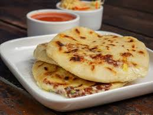

Brindar experiencias gastronómicas inolvidables con recetas tradicionales y un toque moderno.
Ser el restaurante preferido por aquellos que buscan calidad, sabor y un ambiente acogedor.
Contamos con un equipo diverso de ingenieros, diseñadores y estrategas que comparten una misma pasión.